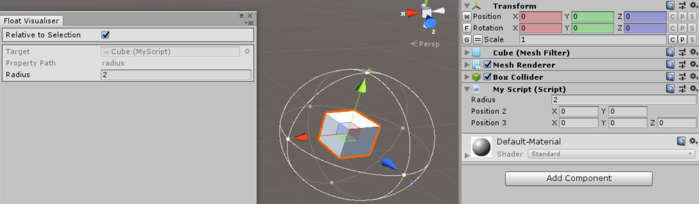
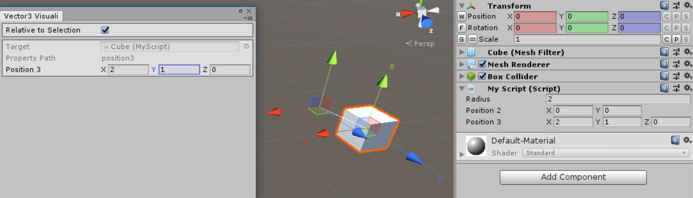
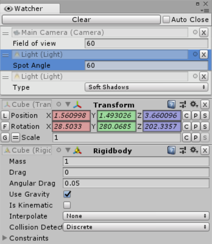

Inspector Gadgets also adds various useful functions to the context menu (right click menu) of each field in the Inspector based on its type.
- These functions only support multi-object selection in Inspector Gadgets Pro.
- Most types have
CopyandPastefunctions which allow you to copy values between fields in Unity as well as to and from other programs. - The fields in the
TransformInspector have functions to snap them to the grid, raycast down and snap to the ground, and rotate to look at another object. - The fields in the
RectTransformInspector have functions to square them (set the height equal to the width or vice versa) and to snap them to the edges of its siblings in a particular direction (Right/Up/Left/Down). - Unity Object acquisition:
FindObjectOfType,GetComponent,GetComponentInChildren,GetComponentInParent,AddComponent. - Unity Object array acquisition:
FindObjectsOfType,GetComponents, etc. - Create new instance of any
ScriptableObjecttype. Open Inspectorto open a new Inspector window showing the target object.- Save any Unity
Objectas an asset (such as a procedurally generated mesh). - Randomize within common ranges: 0-1, 0-100, 0-360 for
floats, randomVector2in a unit circle, randomVector3on or in a unit sphere, randomQuaternion, random euler angles. - Common vectors: zero, right, up, forward, one.
- Normalize vector.
Stringto lower or upper case.Logcurrent value.
New Locked Inspector
This feature is only available in Inspector Gadgets Pro.
The Edit/Selection/New Locked Inspector (Ctrl + Alt + I) menu function item opens a new Inspector window locked to the current selection so you can easily compare and copy values between different objects.
Persist After Play Mode
This feature is only available in Inspector Gadgets Pro.
While in Play Mode, every Component and Inspector field gets a Persist After Play Mode context menu function to allow their values to be retained once you leave Play Mode instead of being reset to their previous value.

Visualise
For floats and Vectors only. Opens an editor window that displays a gizmo in the scene to visualise and manipulate the chosen field. Vectors are visualised using a position handle with a line leading back to the origin while floats are visualised using the same wireframe sphere used to display the shape of a SphereCollider.


Watch
Opens an editor window that displays a list of all fields you have used the function on so you can view (and edit) them all at the same time. You can use this function on individual fields as well as entire Components.
The Lite version only allows you to watch up to 3 fields at a time.
